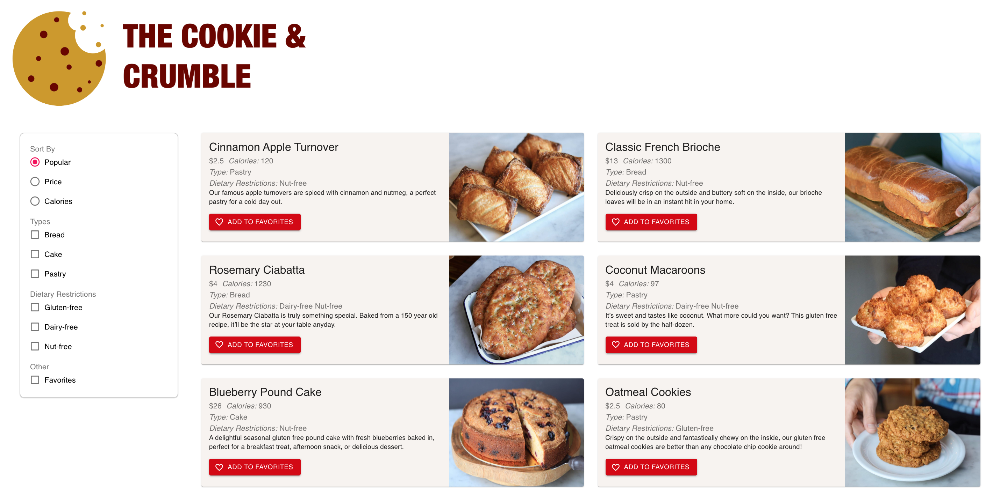

To get myself started on learning React, I decided to build a small application for my hypothetical bakery.
To take a took at the application you can access and download the files at this github repository.
The application aims to make browsing on a bakery’s website more intuitive and efficient for users with
unique dietary needs such as allergies to nuts, users who are looking for a specific type of baked goods
or users that might be particularly conscious towards the price or calorie count. To achieve this, we allow sorting
of the price of the goods and the calorie content that can work in tandem with two types of filtering: goods that do
not contain nuts, dairy and gluten and the type of baked goods like cake, pastry or bread.
Because this was a project aimed for me to understand how to use React, and is a technical project, I've outlined
my implementation of the sorting and filtering methods I used.

I designed my interface as follows. It heavily relies on images and textures to provide an intuitive experience for
the user. The 12 cards in
total feature an image of a baked good on the right. The left side of the card contains a summary of information
that can be helpful to the user. The cards and the red favourite button have shadows to stand out from their
backgrounds. The button in particular appears clickable in this way, and is supported by a call to action “Add to
favourites” next to it. Upon clicking it, the button changes to a bright yellow to indicate that the task was
successful. Removing from favourites is equally intuitive, and when the favourites filter is applied, removal
provides instant feedback by the removal of the card. The checkboxes allow the user to stack filters and sorts. It’s
position on the left side of the website mimics that of other popular websites. One sort checkbox is highlighted,
“popular”, which is the default setting upon opening the page. This provides the user with items that might be most
relevant to the users interests.
To pass the data to our components, I set custom properties on the components and rendered them within each
component. When a user interacts with a component, it calls the parent function, as the parent function was passed
as a local function through properties. Through this, the state of the parent, index.js, can be changed from the
components it includes. One the parent state changes, it automatically updates the data of the components. As an
example, when the user adds an item as a favorite, the component, item, will change the parent state through the
linked function, and the updated parent state will be reflected in the change of the component’s favorite button.